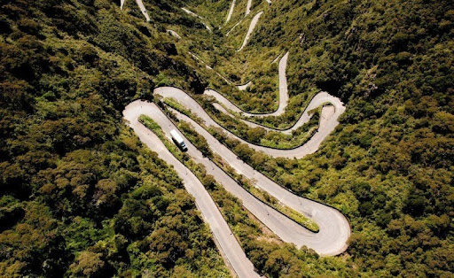
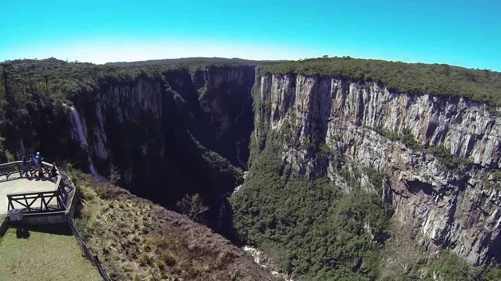
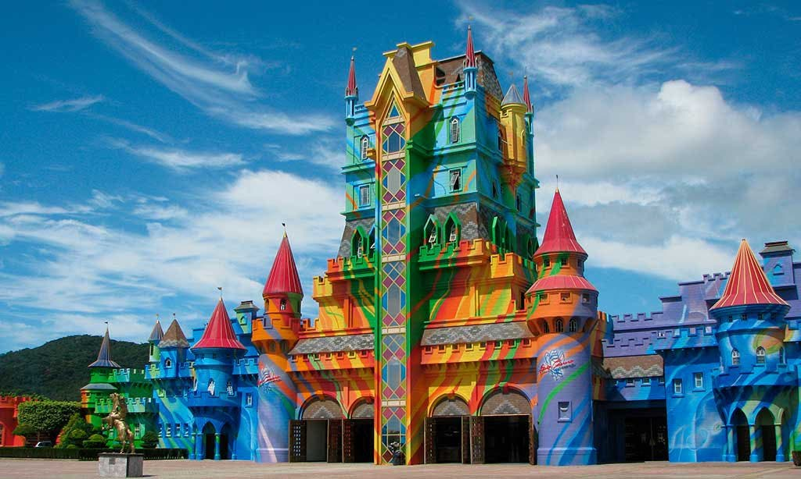
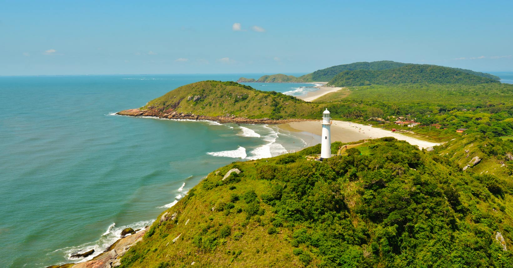
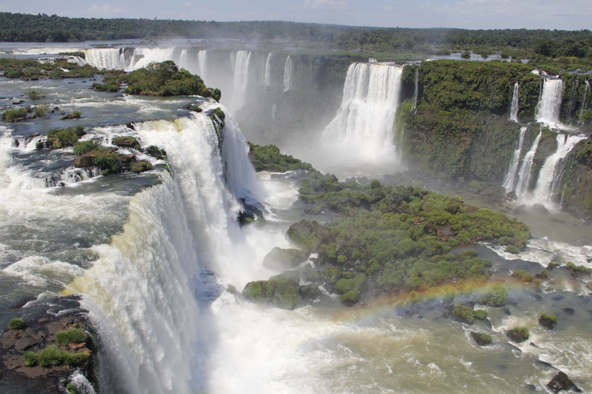
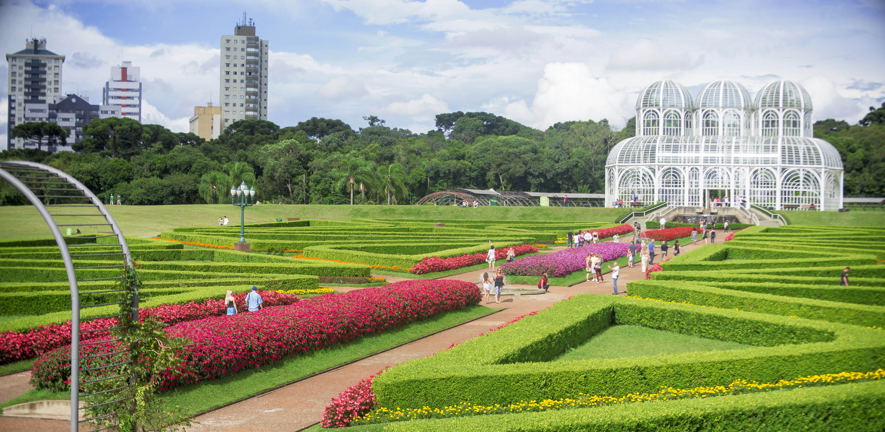

Destinos
-

Gramado,
Rio Grande do Sul
Um dos lugares no Rio Grande do Sul que vê neve com certa regularidade, assim como Cambará do Sul. Não vai faltar o que fazer, seja para um passeio tradicional ou uma visita ao Vale dos Dinossauros, um parque cheio de dinossauros animatrônico
Peça seu orçamento -

Serra do Rio do Rastro,
Santa Catarina
Marcada por montanhas íngremes cortadas por estradas curvas que oferecem uma vista panorâmica fenomenal. Na região há ótimos restaurantes, para aproveitar numa boa, mas também há opções que envolvem muita diversão.
Peça seu orçamento -

Cambará do Sul,
Rio Grande do Sul
Um dos pontos que chegam aos frios mais intensos do Brasil – A terra dos Canyons. Mas para quem gosta muito de passeios, há uma série de guias e agências que transportam turistas por entre os pontos mais populares de Cambará do Sul.
Peça seu orçamento -

Balneário Camboriú,
Santa Catarina
No litoral de Santa Catarina encontra-se o município do Balneário Camboriú. Um ponto quentíssimo para turistas, com inúmeras praias, praças, parques e ilhas na região que merecem uma visita para um bom relaxamento.
Peça seu orçamento
-

Beto Carrero World,
Santa Catarina
O maior parque de diversões de todo o Brasil, o Beto Carrero World impressiona por suas atrações, opções de entretenimento para diferentes idades e para toda a família. O parque se mantém aberto o ano todo, especialmente em períodos de férias, e a alta estação acontece no verão.
Peça seu orçamento -

Ilha do Mel,
Paraná
A Ilha do Mel é um ótimo ponto, tanto para aventureiros quanto para casais buscando um sossego, há várias grutas, trilhas e um bom espaço natural para ser explorado, sem muita interferência de máquinas, o que atrai praticantes de ecoturismo. Mas também há várias grutas, trilhas e um bom espaço.
Peça seu orçamento -

Cataratas do Iguaçu,
Foz do Iguaçu, Paraná
Não é uma praia, mas as potentes correntezas e quedas d’água das Cataratas do Iguaçu mostram seu maior esplendor na época chuvosa. Há uma boa diversidade de atrações na região, como presenciar as belezas naturais. Essa época é de seca, mas prepare-se para sair molhado.
Peça seu orçamento -

Curitiba,
Paraná
Curitiba está entre as melhores cidades do sul do Brasil para turistas, com opções de lindos parques, bairros e ruas pra se passear, fascinantes obras arquitetônicas, ricos museus, teatros e praças. Sem deixar pra trás o famoso Jardim Botânico, com seus belos jardins externos bem planejados.
Peça seu orçamento